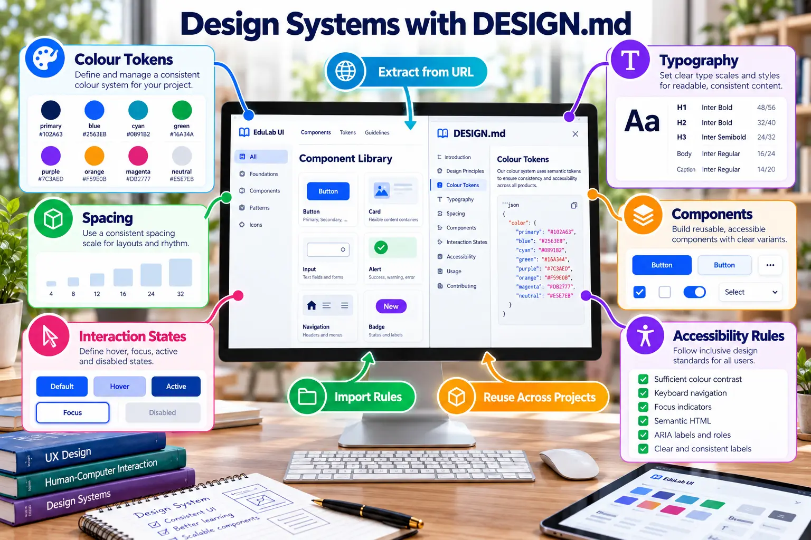

Design Systems and DESIGN.md
Define reusable visual and interaction rules that remain consistent across projects and tools.

What DESIGN.md should capture
FoundationsColour, typography, spacing, radius and elevation.
ComponentsButtons, inputs, navigation, cards and alerts.
StatesDefault, hover, focus, loading, success and error.
AccessibilityContrast, keyboard access, labels and status beyond
colour.
Starter DESIGN.md
# Design System ## Colour - Primary: #102A63 - Success: #16A34A - Warning: #F59E0B - Error: #DC2626 ## Components - Buttons use an 8 px radius. - Cards use 24 px padding. - Error states include an icon and text. ## Accessibility - Maintain readable contrast. - Provide visible keyboard focus.